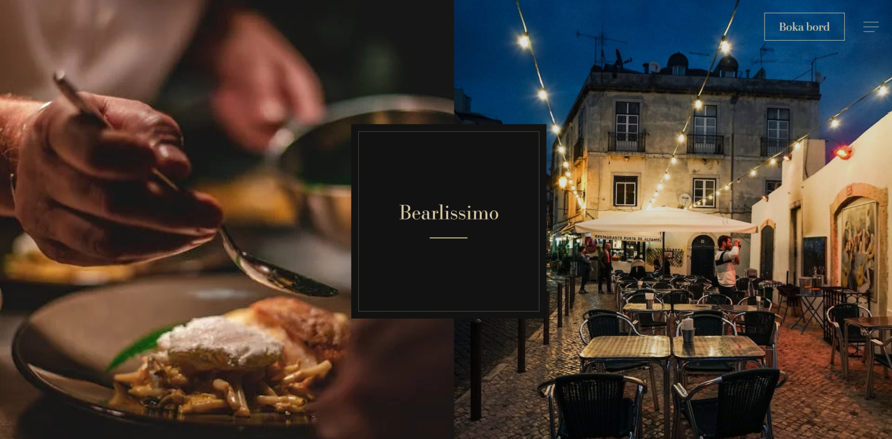
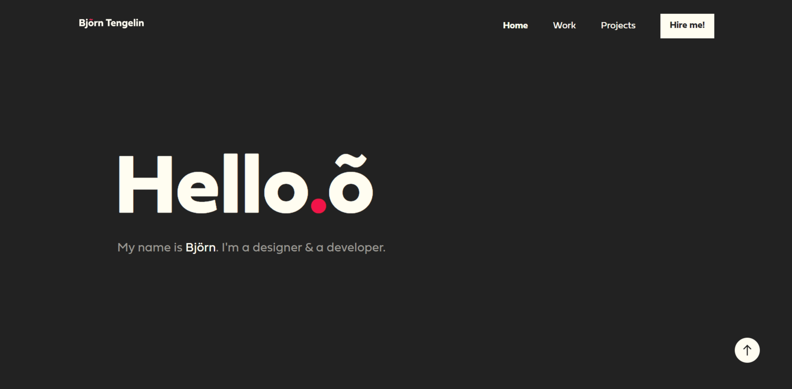
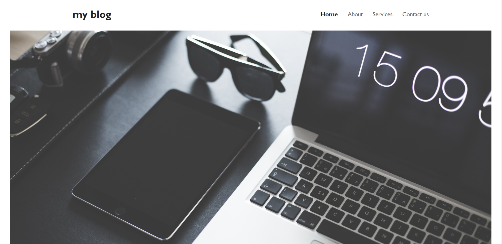
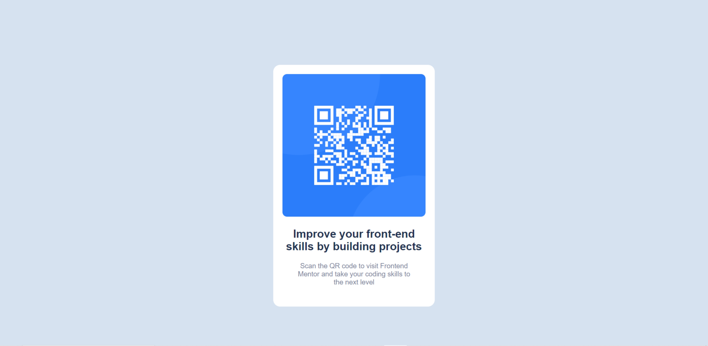
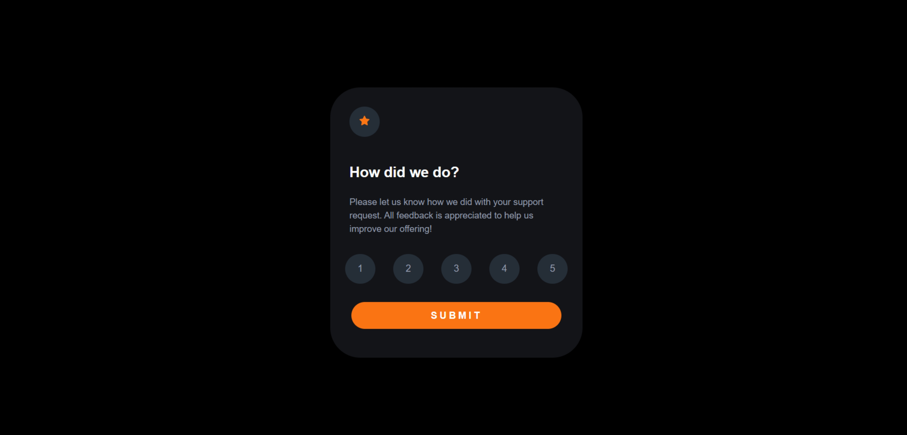

My name is Tobias Eriksson, a 25 year old student from Sweden. I am a web designer & a web developer that really enjoy this part of being creative and to produce a product to one of my future customers. Feel free to contact me about working together in the future.

This is the finished product of restaurant Bearlissimo. A restaurant placed in central of Örebro, Sweden that is focusing on the Italian kitchen. Bearlissimo has a 5 out of 5 rating on ratemyrestaurant.com.

This is the finished product of my teachers portfolio that I produced in cooperation with himself. This portfolio is produced with only HTML and CSS.

This is the finished product of one of my very first projects as a web developer. This is a very simple blog-site that is produced with only HTML and CSS. This project was created to test different ways to style a simple website.

This is the finished product of a QR code website. This was my first challenge as a Frontend Mentor member.

This is the finished product of a "Submit score" website. This was my second challenge as a Frontend Mentor member. This was the first challenge i completed when JavaScript was included.
This is the finished product of a website that includes things to do as a tourist in South Africa. This is one of the projects I created in school and the first time I used a video as a hero.